Configuration Management
With Puppet
Created by Christophe Vanlancker / @carroarmato0
Who
- Christophe Vanlancker
- Senior Junior Sysadmin & Open Source Consultant at Inuits
- Internal operations and maintainer Mediasalsa
What
- Maintain 131+ machines (internally)
- Monitoring
- Metrics
- Updates
- Configuration
I am not alone...
Many colleagues
Many changes
Fundamental Questions:
- Who did what?
- What has changed?
- What were the previous configurations?
Past
- Complex, expensive, machines
- Slow changes
- In-Depth documentation
Present
- Virtualization
- Many many machines
- Dynamic Environments
- Lot of changes
Present Types of Deployments
Manual changes
- Repetitive
- Time Consuming
- Error prone
- Inconsistency risk
- Documentation need be kept up-to-date
- Disaster? HF, hope docs are up to date and backups are working
Present Types of Deployments
Golden Image
- Define state of machine and distribute
- Static ?
- Change means recreating image and redistribution
- Prevent people from monkeying around?
Present Types of Deployments
Shady Wannabe
- No shared knowledge
- Insane solution
- Shady documentation
- No community
- Possibly proprietary
Enter Configuration Management
aka cfgmgmtConfiguration Management
Systems engineering process for establishing and maintaining consistency of a product's performance, functional and physical attributes with its requirements, design and operational information throughout its life.
Configuration Management
- Configuration Identification
- Configuration Control
- Configuration Status Accounting
- Configuration Audits
To put it more simply:
Idempotence (/ˌaɪdɨmˈpoʊtəns/ eye-dəm-poh-təns)
Configuration Management
Tools of trade
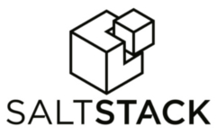and many others...
Puppet
- 2005
- Ruby + Ruby DSL
- Unix-like and Windows
- Declarative
Puppet
Resources
- User account
- Specific file
- Directory of files
- Software Package
- Running Service
- Scheduled Cron Job
- Invocation of a shell command
- ...
Puppet
Resources - types
Type -> user { 'dave': <- Title
ensure => present,
Attribute -> uid => '507', <- Value
gid => 'admin',
shell => '/bin/zsh',
home => '/home/dave',
managehome => true,
}
Puppet
Resources - types
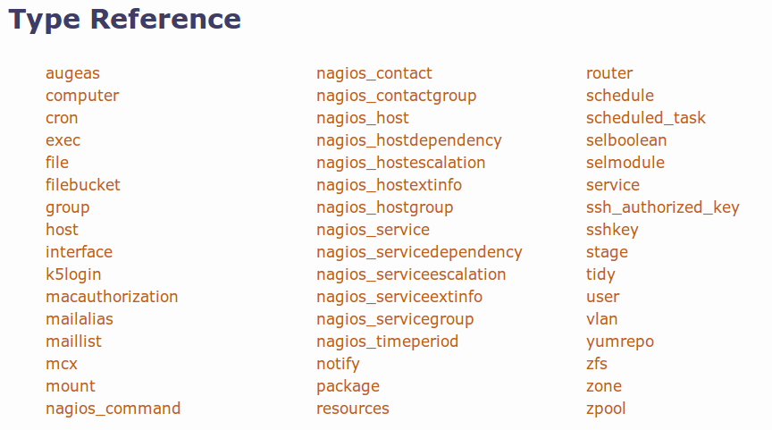Puppet
- Manifests: resource declarations
- Modules: bundle of manifests with a specific purpose
Puppet
Modules can be found on the Forge (https://forge.puppetlabs.com/)
But github is the place to be
Puppet
├── manifests
│ ├── hosts
│ | └── example.pp
│ └── site.pp
└── modules
└── ntp
├── manifests
│ ├── config.pp
│ ├── init.pp
│ ├── install.pp
│ ├── params.pp
│ └── service.pp
└── templates
├── ntp.conf.archlinux.erb
├── ntp.conf.debian.erb
├── ntp.conf.el.erb
├── ntp.conf.freebsd.erb
├── ntp.conf.gentoo.erb
└── ntp.conf.suse.erb
Puppet

Puppet
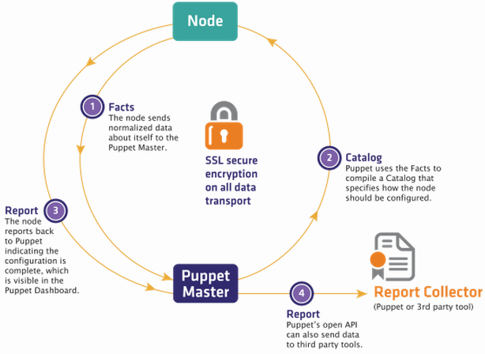Puppet
Facter
[carroarmato0:~] $ facter -p
architecture => amd64
augeasversion => 1.1.0
blockdevice_sda_model => LITEONIT LCT-256
blockdevice_sda_size => 256060514304
blockdevice_sda_vendor => ATA
blockdevice_sr0_model => DVD+-RW UJ8B2
blockdevice_sr0_size => 1073741312
blockdevice_sr0_vendor => MATSHITA
blockdevices => sda,sr0
facterversion => 1.7.0
filesystems => ext2,ext3,ext4,vfat
hardwareisa => x86_64
hardwaremodel => x86_64
hostname => neon-flower
id => carroarmato0
interfaces => eth0,lo,wlan0
ipaddress => 127.0.1.1
ipaddress_lo => 127.0.0.1
is_virtual => false
kernel => Linux
kernelmajversion => 3.11
kernelrelease => 3.11.0-15-generic
kernelversion => 3.11.0
lsbdistcodename => saucy
lsbdistdescription => Ubuntu 13.10
lsbdistid => Ubuntu
lsbdistrelease => 13.10
lsbmajdistrelease => 13
macaddress => d4:be:d9:68:25:73
macaddress_eth0 => d4:be:d9:68:25:73
macaddress_wlan0 => 60:67:20:7c:26:98
memoryfree => 6.69 GB
memoryfree_mb => 6851.83
memorysize => 7.75 GB
memorysize_mb => 7936.18
memorytotal => 7.75 GB
mtu_eth0 => 1500
mtu_lo => 65536
mtu_wlan0 => 1500
netmask_lo => 255.0.0.0
network_lo => 127.0.0.0
operatingsystem => Ubuntu
operatingsystemrelease => 13.10
osfamily => Debian
rvm/bin
physicalprocessorcount => 1
processor0 => Intel(R) Core(TM) i7-3630QM CPU @ 2.40GHz
processor1 => Intel(R) Core(TM) i7-3630QM CPU @ 2.40GHz
processor2 => Intel(R) Core(TM) i7-3630QM CPU @ 2.40GHz
processor3 => Intel(R) Core(TM) i7-3630QM CPU @ 2.40GHz
processor4 => Intel(R) Core(TM) i7-3630QM CPU @ 2.40GHz
processor5 => Intel(R) Core(TM) i7-3630QM CPU @ 2.40GHz
processor6 => Intel(R) Core(TM) i7-3630QM CPU @ 2.40GHz
processor7 => Intel(R) Core(TM) i7-3630QM CPU @ 2.40GHz
processorcount => 8
ps => ps -ef
puppetversion => 3.2.4
rubysitedir => /usr/local/lib/site_ruby/1.9.1
rubyversion => 1.9.3
selinux => false
swapfree => 7.95 GB
swapfree_mb => 8144.00
swapsize => 7.95 GB
swapsize_mb => 8144.00
timezone => CET
uniqueid => 007f0101
uptime => 0:16 hours
uptime_days => 0
uptime_hours => 0
uptime_seconds => 1014
virtual => physical
Puppet
module/virtinstall
Virtinstall::Bootstrap {
ensure => 'present',
bootstrap_method => 'kickstart',
vm_netbridge => hiera('kvm_bridge'),
vm_netmask => hiera('br0_netmask'),
vm_gateway => $::ipaddress_br0,
vm_nameserver => hiera('nameserver'),
vm_domain => hiera('vm_default_domain', 'internal.inuits.eu'),
vm_os_name => 'centos',
vm_os_version => '6',
vm_ram => hiera('vm_default_ram_size', '1024'),
vm_lvm_lv_size => hiera('vm_default_lv_size', '10g'),
vm_lvm_vg_name => hiera('vm_default_vg_name', "vg_${::hostname}"),
datacenter => $::datacenter,
plannedenvironment => hiera('vm_environment', 'production'),
bootstrap_url_mirror => 'http://pulp2.internal.inuits.eu/pulp/repos/pub/centos/6/os/x86_64/',
bootstrap_baseurl => "http://${::ipaddress_br0}/bootstrap",
tag => 'vms',
}
Puppet
module/virtinstall preseed Debian
virtinstall::bootstrap{'mediasalsa01.infradev.mediasalsa.eu':
vm_ipaddress => '10.0.49.11',
vm_vcpus => '2',
vm_ram => '4096',
vm_os_name => 'debian',
bootstrap_method => 'preseed',
bootstrap_url_mirror => 'http://ftp.be.debian.org/debian/dists/squeeze/main/installer-amd64',
}
Puppet
module/virtinstall preseed Debian
#### Squeeze preseed file
### Localization
d-i debian-installer/locale string <%= vm_locale %>
d-i console-keymaps-at/keymap select <%= vm_keymap %>
### Network configuration
d-i netcfg/choose_interface select <%= bootstrap_device %>
d-i netcfg/disable_dhcp boolean true
d-i netcfg/confirm_static boolean true
d-i netcfg/get_hostname string <%= vm_hostname %>
d-i netcfg/get_domain string <%= vm_domain %>
d-i netcfg/get_ipaddress string <%= vm_ipaddress %>
d-i netcfg/get_netmask string <%= vm_netmask %>
d-i netcfg/get_gateway string <%= vm_gateway %>
d-i netcfg/get_nameservers string <%= vm_nameserver %>
Puppet
module/virtinstall run
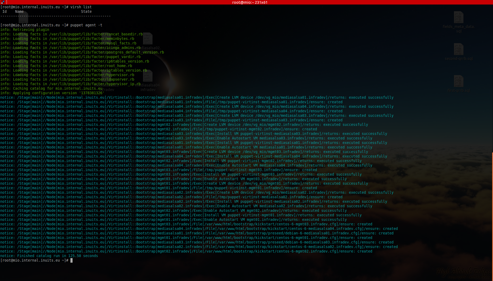Puppet
Environments
Different Environment = Different Puppet code
or
Different $customer = Different Repository...
Puppet
Environments
On the clients
/etc/puppet/puppet.conf
...
environment = production
...
...
environment = development
...
On the Master
manifest = \$confdir/environments/\$environment/manifests/site.pp
modulepath = \$confdir/environments/\$environment/modules
Puppet
Exported Resources
(Local) Resource
user { 'steve': home => '/home/steve' }
Exported Resource
@@user { 'steve': home => '/home/steve' }
Puppet
Exported Resources
@@nagios_host { $fqdn: ....}
Nagios_host <<| |>> { notify => Service[$::icinga::service_server] }
Nagios_service <<| |>> { notify => Service[$::icinga::service_server] }
Nagios_hostextinfo <<| |>> { notify => Service[$::icinga::service_server] }
Nagios_command <<| |>> { notify => Service[$::icinga::service_server] }
Nagios_contact <<| |>> { notify => Service[$::icinga::service_server] }
Nagios_contactgroup <<| |>> { notify => Service[$::icinga::service_server] }
Nagios_hostdependency <<| |>> { notify => Service[$::icinga::service_server] }
Nagios_hostescalation <<| |>> { notify => Service[$::icinga::service_server] }
Puppet
Exported Resources with tags
Exporter
@@apache_vhost {'mysite.example.org':
...
tag => 'hypervisor02.example.org',
}
Collector
node 'hypervisor02.example.org' {
Apache::Vhost <<| tag == $::fqdn |>> {}
...
}
Puppet
Exported Resources
In the past stored in DB (mysql/mariadb)
Intensive for massive collectors (monitoring, central backup, ...)
Introduction of PuppetDB
Puppet
PuppetDB
PuppetDB collects data generated by Puppet.
It enables advanced Puppet features like the inventory service and exported resources, and can be the foundation for other applications that use Puppet’s data.
Puppet
PuppetDB
Before / After
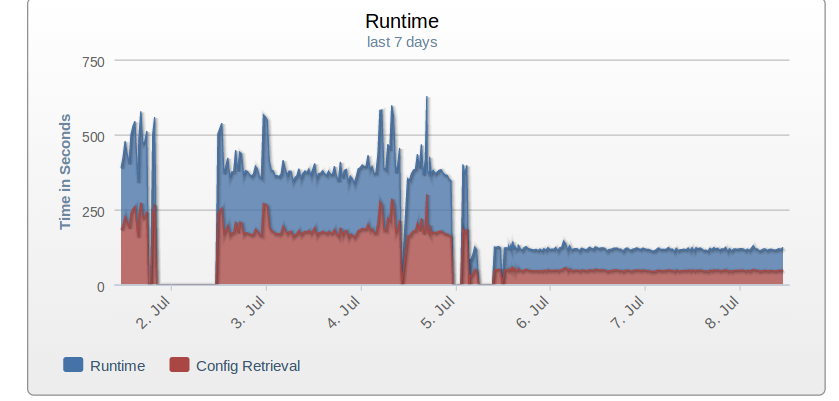Hiera
Variable lookup
Data and code separation
Hiera
---
eth0_ipaddr: '10.0.33.3'
mysql_stats_user: 'someuser'
mysql_stats_pw: 'somepassword'
serveraliases:
- 'www.mywebsite.nl'
- 'mywebsite.nl'
- 'www.yetanotherwebsite.nl'
- 'yetanotherwebsite.nl'
- 'www.ithinkyougotthis.nl'
- 'ithinkyougotthis.nl'
mysql_root_pass: 'WoudntYouLikeToKnow'
mysql_site_pass: 'nOt7oDaY'
mysite_sitename: 'My Site Production'
mysite_siteroot: '/var/vhosts/mysite.nl/htdocs/'
Hiera
node /mysite/ {
########################################
# BEWARE, changes here have effect on: #
# mysite and mysite-staging #
########################################
$mysite_vhost_name = hiera('mysite_vhost_name')
$mysite_siteroot = hiera('mysite_siteroot')
$mysite_cron_url = hiera('mysite_cron_url')
$mysite_cron_key = hiera('mysite_cron_key')
$mysql_site_pass = hiera('mysql_mysite_pass')
$server_aliases = hiera('serveraliases')
Hiera
include drupal7
drupal7::config { $mysite_vhost_name:
drupal_sitename => hiera('mysite_sitename'),
siteroot => $mysite_siteroot,
config_basepath => hiera('mysite_config_basepath'),
database_host => '127.0.0.1',
database_name => 'mysite',
database_user => 'mysite',
database_password => $mysql_site_pass,
dedicated_cron => true,
is_multidomain => true,
environment => hiera('drupal_environment', 'production'),
cronkey => $mysite_cron_key,
cron_url => $mysite_cron_url,
}
Hiera
Lookup hierarchy
---
:backends:
- yaml
:logger: console
:hierarchy:
- clients/%{environment}/%{hostname}
- hypervisors/%{hypervisor}
- hypervisors/common
- locations/%{datacenter}
- environments/%{environment}
- ostype/%{operatingsystem}
- common
:yaml:
:datadir: /etc/puppet/hieradata
Puppet Roles + Hiera
node /www/ {
include apache
include ntp
include php
...
}

Foreman
- Complete lifecycle management tool for physical and virtual servers
- Paul Kelly and Ohad Levy (2009)
- From simple central Puppet Report overview to automated deployment (not limited to Puppet!)
- Multitenancy
- Internal auth / Ldap
- API
- Smart-Proxy
Foreman
Provision on bare metal and cloud
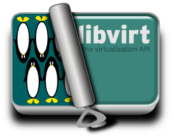Deployment Strategies
Deployment Strategies
Tools of trade
- Git - versioning
- Jenkins - CI
- FPM - Packaging
- Pulp - Repositories
- MCollective / SSH - Some deployment strategy
Deployment Strategies
Git
Puppet Modules as Git Submodules
Deployment Strategies
Puppet
[puppet-inuits] master ± tree -L 2
.
├── manifests
│ ├── classes
│ ├── defaults
│ ├── hosts
│ └── site.pp
├── modules
│ ├── activemq
│ ├── apache
│ ├── apc
│ ├── apt
│ ├── augeas
│ ├── bacula
.....
Deployment Strategies
Git - Initial clone
git clone ssh://.....git
git submodule update --init
Deployment Strategies
Git - Add submodule
git submodule add ssh://.....git modules/<name module>
git add .gitmodules
git add module/<name module>
git commit -sm 'Add <name module>'
git push
Deployment Strategies
Git - Update
git pull --rebase
git submodule update --init
Deployment Strategies
Git - tig
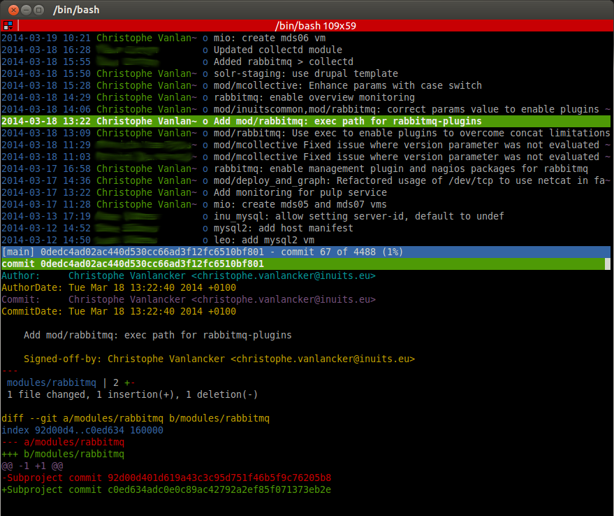Deployment Strategies
Jenkins
- CI Server (Continuous Integration)
- Open Source
- Fork of Hudson
- Lots of Plugins
- Jobs
Deployment Strategies
Pipelines
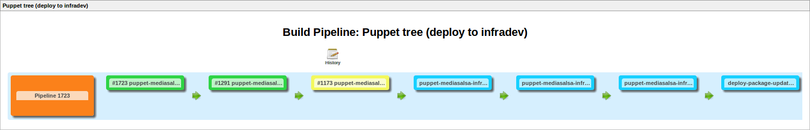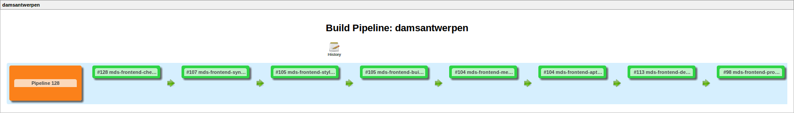
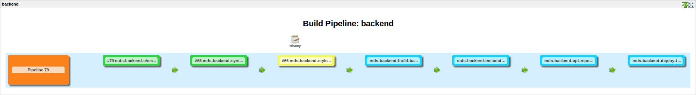
Deployment Strategies
Displaying Builds - zmon
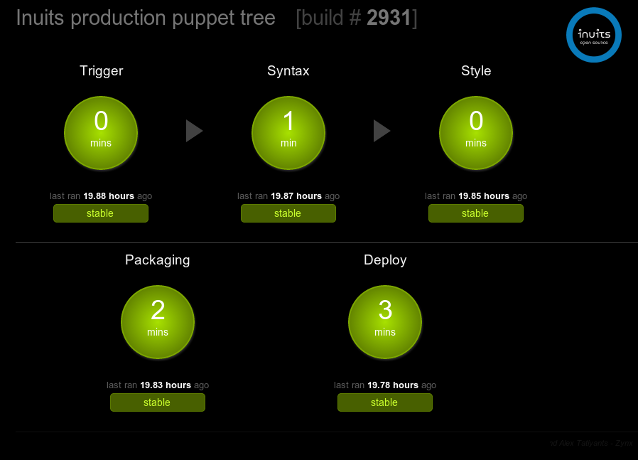Deployment Strategies
Displaying Builds - ganbatte
github: kalmanolah/ganbatte 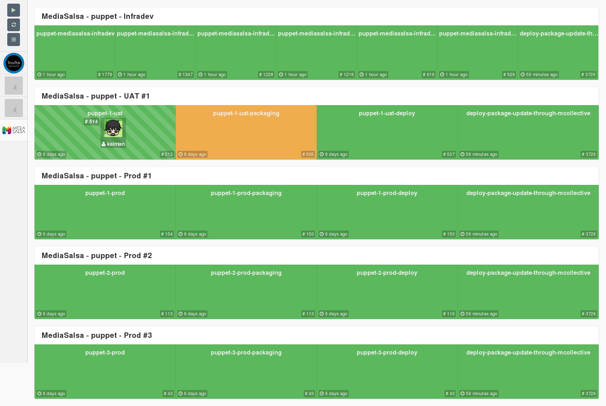Deployment Strategies
Promotions
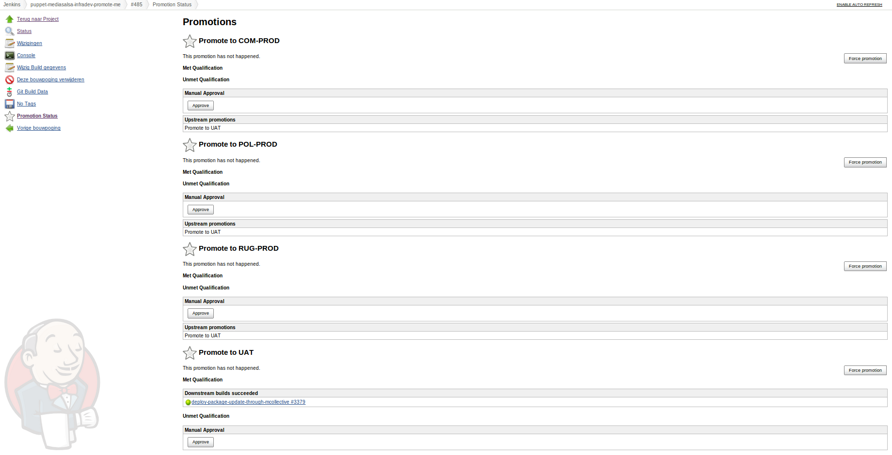Deployment Strategies
- Code
- Deploy to Infradev
- Feedback (Foreman for Puppet, Icinga for services)
- Correct Code if necessary and repeat from step 2
- Promote to UAT and repeat step 3
- Promote to Production Environments
Deployment Strategies
Packaging
fpm - Effing package managers! Build packages for multiple platforms (deb, rpm, etc) with great ease and sanity.
fpm -s dir -t rpm \
--name "${PACKAGE_NAME}" \
--version "${PACKAGE_VERSION}" \
--iteration "${PACKAGE_ITERATION}" \
--architecture noarch \
--prefix /etc/puppet/environments/${environment}/ \
--vendor 'Inuits' \
--description 'Puppet Tree' \
--maintainer 'Jenkins' \
--epoch '1' \
-C ${WORKSPACE} .
Deployment Strategies
Breakage on Infradev must result in predicatable breakage on UAT
Breakage on UAT must result in breakage in Production
Reality: not all envs are equal, but all possible tests should be run on Infradev
Deployment Strategies
Repositories
- Pulp
-
Add pkg:
pulp-admin rpm repo uploads rpm -f mypackage.rpm --repo-id=myrepo -
Rebuild metadata:
pulp-admin rpm repo publish run --repo-id=myrepo
Deployment Strategies
Repositories
Strive to have staged repositories
Deployment Strategies
Mcollective / SSH
Invalidate pkg manager cache and trigger update
Deployment Strategies
Mcollective
- Framework to build server orchestration or parallel job execution systems
- Queuing Technology (RabbitMQ, ActiveMQ, ...)
#Clean yum cache on node
sudo /usr/bin/mco rpc package yum_clean mode=expire-cache -I ${mcollectivenode}
#Trigger package update
sudo /usr/bin/mco rpc -t 1200 package update package=${packagename} -I ${mcollectivenode}
THE END